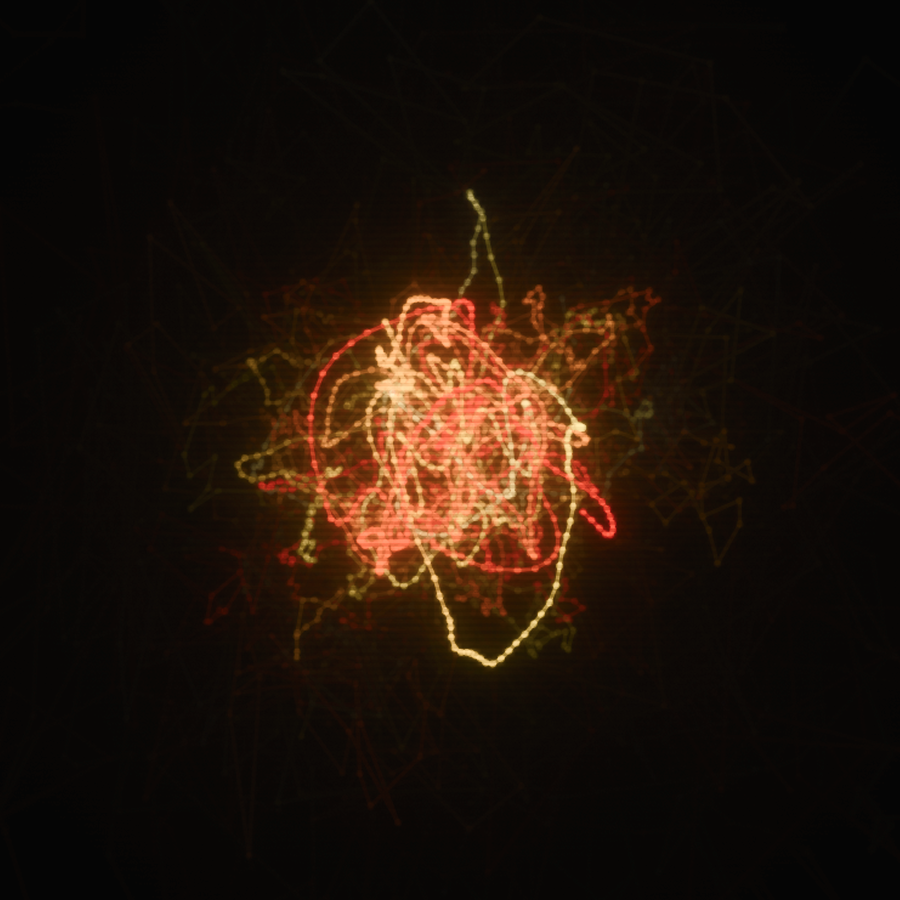

soundwatch
A music visualizer for macOS. It listens to whatever your Mac is playing, on any output, and draws it. Screen-record it for reels, release teasers and visuals, or just leave it running while you work.
macOS 14.2 or later
Apple Silicon and Intel
Piano Scales
A pocket scale reference. A two-octave keyboard shows the notes of any key in all seven modes, from Major and Minor to Dorian, Lydian and Locrian. Tap or click left and right to change key, up and down to change mode.
Runs in the browser
Add it to your phone's home screen to use it offline